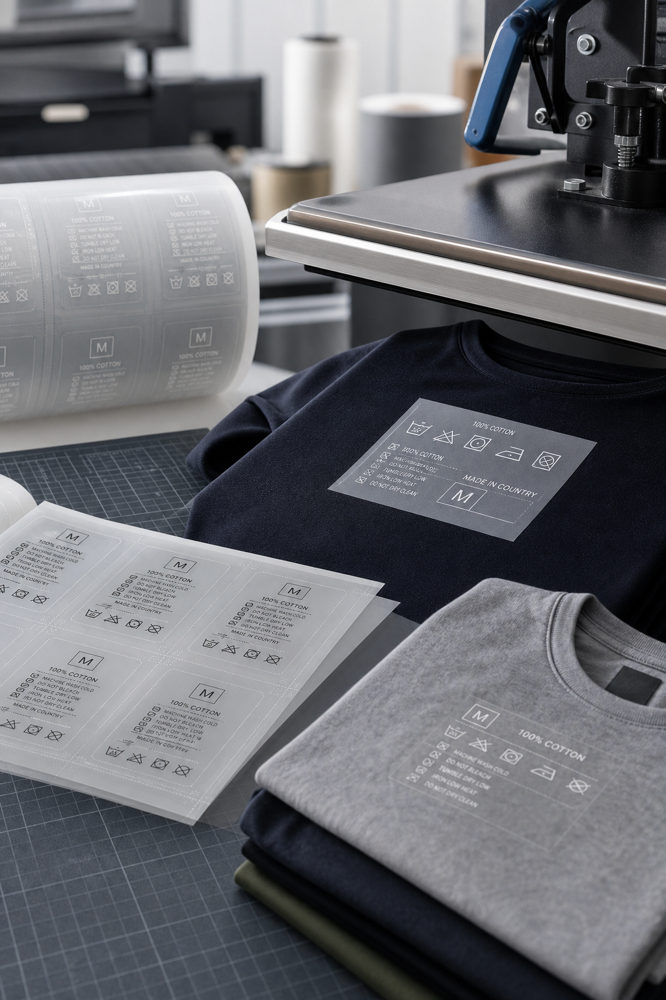

HTL
Integrated heat-transfer label printing and curing for garment identification applications.
Our HTL setup supports transfer-label production for apparel and textile applications where clean print detail, stable curing and dependable transfer consistency are required. The section is arranged to support repeat garment programs with better process control from print through final curing.
HTL printing supports fine label detail and stable output for garment-identification and care-label applications.
Dedicated curing support helps maintain transfer readiness and more dependable downstream application performance.
The process is suited to label programs that need consistent readability, repeatability and production stability.
